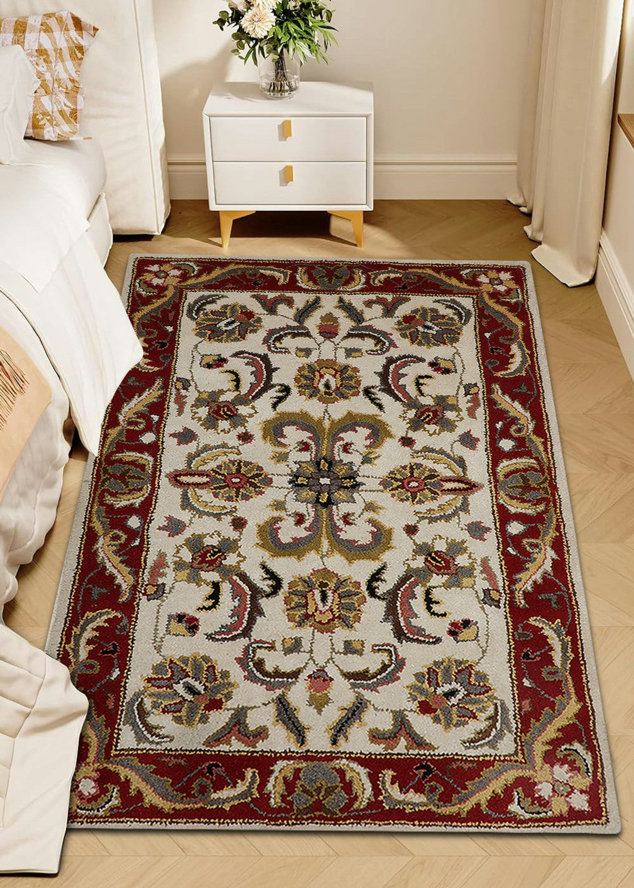

How to Identify Authentic Antique Persian Rugs
For generations, the Persian hand-knotted rug has represented the pinnacle of textile art. Woven by master artisans and nomadic tribes, these rugs carry stories, cultural symbolism, and centuries of tradition in every thread. However, the rise of industrial mass production has flooded the market with highly convincing machine-made replicas.
To the untrained eye, a synthetic, machine-bound rug can look remarkably similar to a high-end antique collectible. Yet, for appraisers and collectors, identifying authenticity relies on a meticulous assessment of technical details. Knowing what to look for will save you from investing in counterfeit reproductions.
"An authentic Persian rug is never perfectly symmetrical or uniform. It is a living piece of human expression, shaped by hands, wooden looms, and natural pigments."
1. Examine the Back: Weave Geometry and Knot Irregularity
The single most important test is flipping the rug over. In a genuine hand-knotted rug, the backing is a perfect reflection of the front design. Every individual knot should be visible, clean, and tightly packed. Crucially, you should look for subtle irregularities in knot size, spacing, and row alignment. If the back looks completely flawless, perfectly straight, and sterile, it is almost certainly woven by an automated machine.
2. The Fringe Test: Core Warp Threads vs. Stitched Extensions
In an authentic antique rug, the fringe is not an ornament attached after weaving. Instead, the fringe consists of the actual foundation warp threads that run through the entire core structure of the rug. They are the skeletal bones of the carpet. If you look closely at the ends of a machine-made rug, you will notice that the fringe has been stitched or glued onto the binding edge after production, rather than running out from the body itself.
3. Color Harmony: Organic Vegetable Dyes and "Abrash"
Classic antique rugs were colored using organic vegetable dyes made from wild plants, madder root, walnut husks, pomegranate peels, and indigo. These natural colors mature over centuries, growing richer and softer in tone. One characteristic indicator of vegetable dyes is *abrash*—subtle horizontal variations in a single color shade resulting from different batches of dyed wool. Machine-made rugs use uniform, chemically consistent aniline dyes that look flat, hard, and fade poorly under natural sunlight.
4. Flexibility and Weight
A genuine wool or silk hand-knotted Persian rug can be folded, bent, and rolled in any direction without resistance. The backing is made of soft cotton or wool warps and wefts. Machine-made rugs, by contrast, utilize thick, rigid synthetic backings coated with latex glues to hold fibers in place, making them stiff and likely to crack or warp if folded.
Determining a rug's lineage, age, and value is a fine science. If you believe you own an authentic antique masterpiece, contact our workshop to arrange a physical examination, cataloging, and professional hand-washing to preserve its historical character.